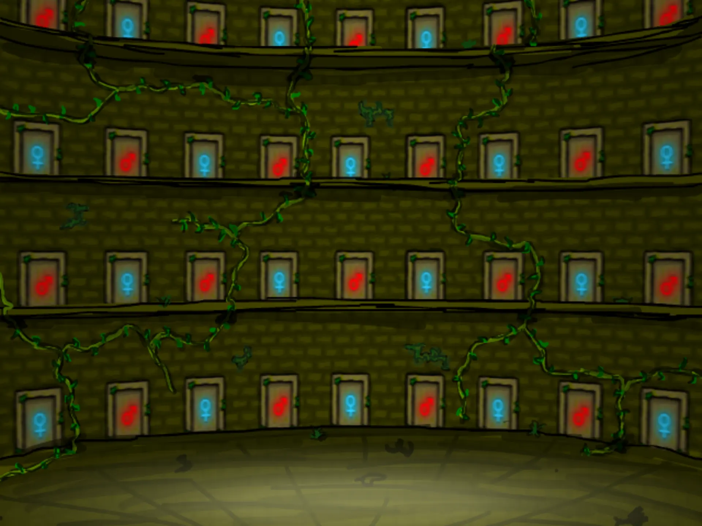
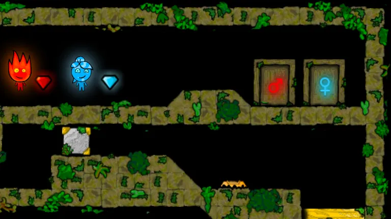

Two players. Two places. One temple.
The 2009 Forest Temple, now online multiplayer for the first time! Play side by side on one keyboard, or invite a friend from anywhere: choose who plays Fireboy & Watergirl, and pick up where the two of you left off. Rebuilt for online co-op by Jayan Sirikonda.

Online Multiplayer
From sign-in to level one, with a friend
-
1Now
Sign In
Use Google, or an email address you confirm. Two-factor is there if you want it.
or -
2Next
Invite a friend, choose roles
Pick who plays Fireboy and who plays Watergirl before you send it, so nobody argues at the door.
sam_kOnlineYou: Fireboysam_k: WatergirlSign in first. -
3Next
Play, and come back together
Progress belongs to the pair. Whichever of you invites next, you resume from the same level.
Your pair save appears here when sam_k accepts.
Watch & Compete
Watch a friend's game, or chase their time
Watch
Live
Leaderboard
| Pair | Medal | Time |
|---|---|---|
| ember & tide | 0:41.08 | |
| you & sam_k | 0:43.62 | |
| kiln & brook | 0:58.15 | |
| ash & rain | 1:12.90 |
Times are per pair, per level, written the moment a level is saved.